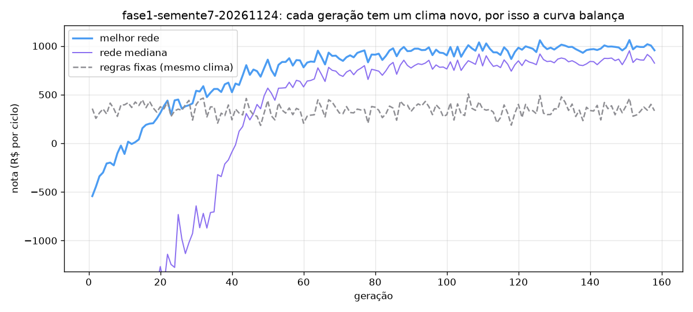
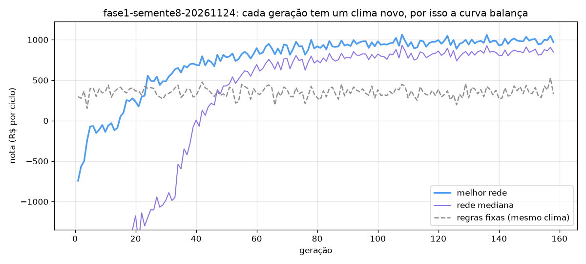
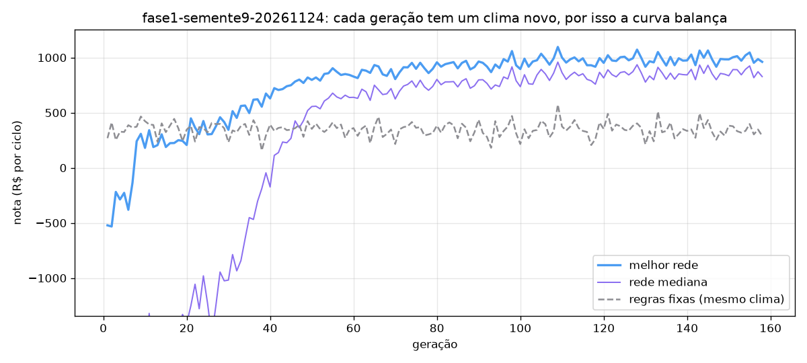

O resultado da fase 1 e a tarifa de verdade
Os resultados da noite de 24/11 que o passo 06 prometeu para a manhã: o relatório das 3 sementes em 10 climas inéditos. E a troca da tarifa de energia de R$ 0,85 para R$ 1,28/kWh (Equatorial Goiás, com impostos), antes de começar a fase 2.
O que foi feito
- Rodado o
treino.relatorionas 3 execuções da noite, com a tarifa antiga. Era o checklist da manhã que tinha ficado para trás. - A tarifa passou a ser R$ 1,28/kWh na nota (
controle/metricas.py), no simulador (simulador/estufa.py) e no preço padrão do Dinheiro no dashboard. A origem do número está na decisão 0009. - Rodado o relatório de novo, com a tarifa nova, sem retreinar nada.
Por quê
A tarifa precisava de fonte e de região. O Gabriel definiu a Equatorial, em Goiânia, e desconfiou de R$ 0,96. Esse valor bate com a tarifa sem impostos (R$ 0,954, reajuste em vigor desde 22/10/2026). Como a nota mede o que sai do bolso do produtor, entrou o valor com ICMS e PIS/COFINS: R$ 1,28.
A pergunta era: com a energia 50% mais cara, o campeão da fase 1 ainda vale? Em vez de retreinar (uma noite), o campeão foi reavaliado com a tarifa nova. Ele ainda vence as regras fixas em 10 de 10 climas, então a fase 1 fica como está, documentada com R$ 0,85. A fase 2 começa com R$ 1,28 e parte desse campeão.
Números
Média de 10 climas amenos que nem o treino nem a prova viram (sementes 20.000 a 20.009). Nota em R$ por ciclo de 35 dias, estufa de 1000 pés. Fonte: relatorio-tarifa085.md e relatorio-tarifa128.md em cada pasta treino/saidas/fase1-semente*-20261124/.
| Controlador | Nota a R$ 0,85 | Nota a R$ 1,28 | Energia a 0,85 (kWh) | Energia a 1,28 (kWh) | Massa (g/pé) | Tempo fora da faixa (0,85 → 1,28) |
|---|---|---|---|---|---|---|
| Campeão semente 7 (g158) | 985 | 749 | 422 | 500 | 246 → 247 | 69% → 70% |
| Campeão semente 8 (g158) | 976 | 837 | 419 | 290 | 257 → 249 | 55% → 49% |
| Campeão semente 9 (g158) | 991 | 735 | 495 | 552 | 252 → 257 | 55% → 56% |
| PID | 679 | 606 | 169 | 169 | 273 | 54% |
| Regras fixas | 360 | 289 | 164 | 164 | 256 | 76% |
| Não fazer nada | −8.379 | −8.379 | 0 | 0 | 8 | 100% |
Nas duas tarifas, cada campeão venceu as regras fixas em 10 de 10 climas inéditos.
Gráficos



As curvas vêm de treino/relatorio.py (função curva), com o geracoes.json de cada execução.
O que deu errado ou surpreendeu
- A tarifa é entrada da rede, não só preço. Esperava-se que trocar a tarifa mudasse só a nota (energia × preço). Mas a rede lê a tarifa (
treino/rede.py), e a entrada normalizada saiu de −0,08 para +0,63. O campeão mudou o comportamento sem treinar: a semente 8 passou a gastar menos energia (419 → 290 kWh), e a 7 e a 9 passaram a gastar mais. A rede nunca viu outra tarifa na fase 1, então a reação a esse número é um acaso do treino. A fase 3, com a tarifa variando, é que vai ensinar o que fazer com ela. - O PID chegou mais perto. Com a energia mais cara, o PID (R$ 606) fica a R$ 130 a R$ 230 do campeão, contra R$ 300 antes. O campeão gasta 2 a 3 vezes a energia do PID e colhe alface um pouco mais leve (246 a 257 g contra 273 g).
- "Tempo fora da faixa" alto em todos. 49% a 76%, até no PID. O relatório conta todas as variáveis do ar, inclusive as que nenhum controlador consegue segurar o dia todo (luz e CO₂, por exemplo). Precisa olhar variável por variável antes de usar esse número no artigo.
- O checklist da manhã do passo 06 só foi feito agora, 4 dias depois.
Como reproduzir
.venv\Scripts\python.exe -m treino.relatorio treino/saidas/fase1-semente7-20261124
.venv\Scripts\python.exe -m treino.relatorio treino/saidas/fase1-semente8-20261124
.venv\Scripts\python.exe -m treino.relatorio treino/saidas/fase1-semente9-20261124Com a tarifa de R$ 0,85, troque PRECOS["tarifaKwh"] e TARIFA_KWH de volta antes de rodar.
Em aberto
- Confirmar a tarifa com uma fatura real da Equatorial (B2 rural: ICMS e descontos).
- Quebrar o "tempo fora da faixa" por variável.
- A fase 2 do currículo: a solução nutritiva, com pH e EC afetando o crescimento (decisão do Gabriel).
Links
- Decisão 0009 (a tarifa) e 0005 (a nota).
- Código:
controle/metricas.py,simulador/estufa.py,treino/relatorio.py,dashboard/src/modules/dinheiro/infrastructure/precosLocal/repositorioPrecosLocal.ts. - Branch:
treino-tarifa-equatorial.